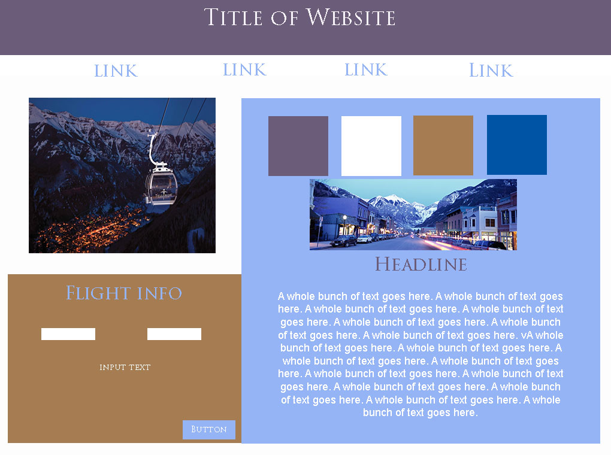
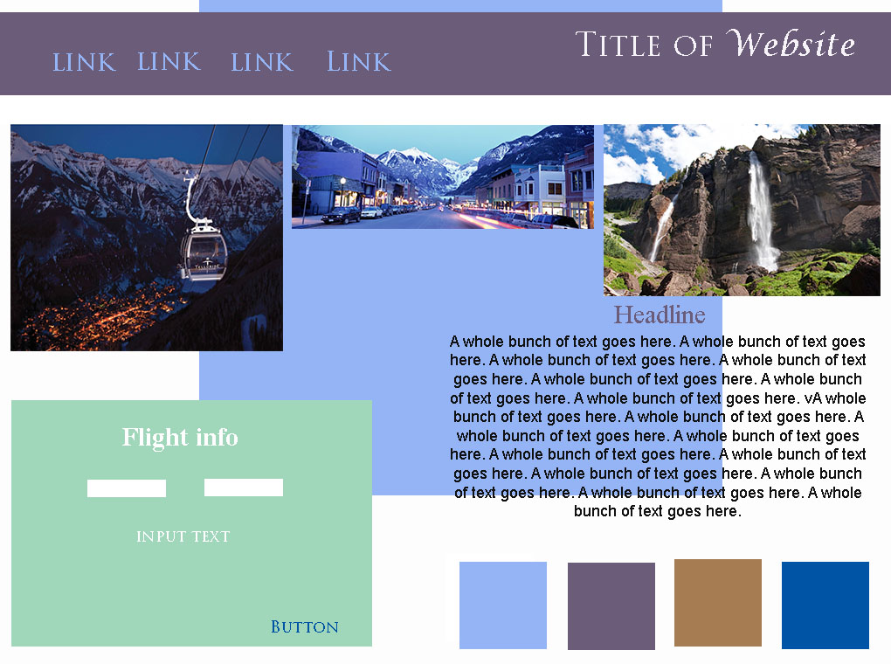
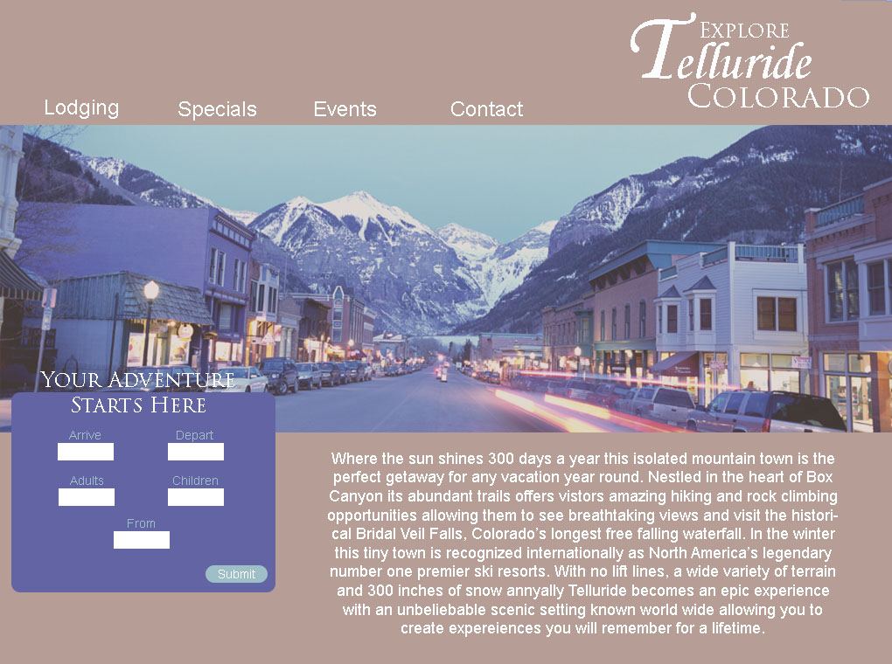
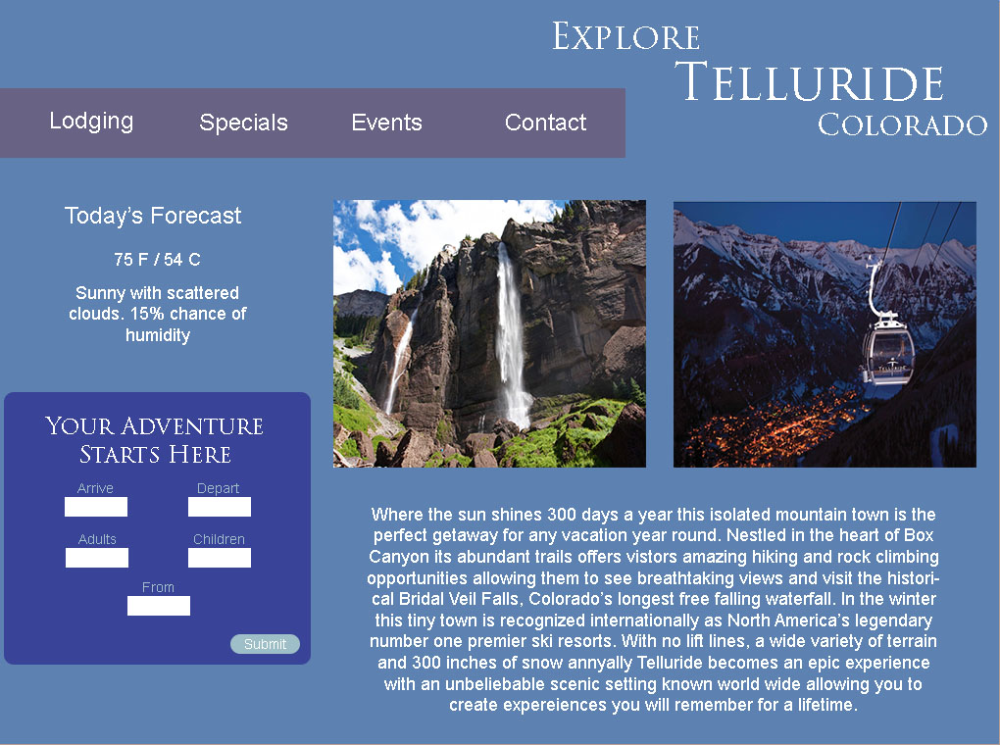

Week 5


The style tiles are simple style ideas for mock ups that will hopefully become a final project at the end. You need a full comp in order to complete the work however you can show clients style tile ideas to allow them to choose a compilation of design for the final product. Each style tile has a different feel to them and can take minutes or hours to design mine however only took about 30 minutes each since I already had two different style ideas in mine. My second style tile has more of a fun and upbeat mood where the first style tile is more classic and professional. In order to design a proper final comp you must create style tiles to appeal to your audience. My target audience for example is more towards an older generation making my first style tile more appropriate for my final product.

